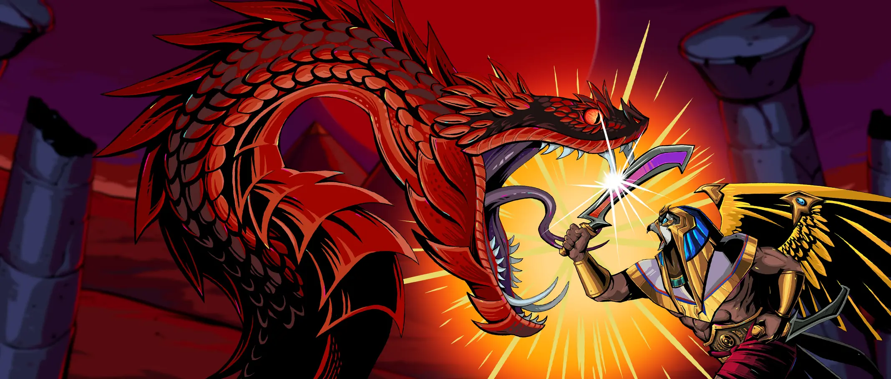

Ra's Reckoning - RTP, Review & Where to Play

| Provider | Play'n GO |
|---|---|
| Game type | Video slot |
| Theme | slot adventure |
| RTP | Varies by casino (see FAQ) |
| Mobile | Yes |
Overview
Ra's Reckoning brings a fresh burst of color and energy to the reels.
The design is clean, modern and easy to follow from the first spin.
A solid pick for players who like their slots straightforward and fun.
Where to Play Ra's Reckoning
Ra's Reckoning is available at online casinos that carry Play'n GO games. Start with our reviewed toplists:
Nigeria | Brazil | Mexico | Kenya | South Africa | Colombia | India
Ra's Reckoning FAQ
What is the RTP of Ra's Reckoning?
Play'n GO releases Ra's Reckoning with several RTP settings, and each casino picks one of them. The exact figure can differ between casinos. To check it, open the game info or paytable inside the game at the casino where you play.
Can I play Ra's Reckoning for free?
Many online casinos let you try Ra's Reckoning in demo mode without depositing. Pick a casino from our toplists and look for a demo or free play option if you want to test the game first.
Where can I play Ra's Reckoning for real money?
Ra's Reckoning is available at casinos that carry Play'n GO games. Our toplists cover Nigeria, Brazil, Mexico, Kenya, South Africa, Colombia and India, and only include operators we reviewed.
Does Ra's Reckoning work on mobile?
Yes. Like all Play'n GO releases, Ra's Reckoning runs in the browser on phones and tablets, with no download needed.